PRESS KIT · STEAM · DEMO OUT NOW
VERDANT 森の射手
最初は、一本の矢。敵を倒して拾ったゴールドで弓を鍛え、貫通・跳弾・複射で画面を矢の嵐に変える、見下ろし型インクリメンタル弓アクション。3人の射手から選び、短い戦いと永続強化を重ねて、5つのエリアのボスに挑め。
配信・動画について
- 実況・配信・動画の投稿は、個人・法人を問わず自由です。許可の連絡は要りません。
- 収益化（広告・投げ銭・メンバーシップなど）もかまいません。
- 体験版・製品版のどちらも、最後まで配信してかまいません。
- 配信のタイトル・サムネイル・概要欄に、このページの素材（ロゴ・キーアート・スクリーンショット・トレーラー）を使えます。
- ゲームの音は、配信・動画で使えるライセンスの物です。万一、著作権の申し立て（Content ID など）が付いたときはご連絡ください。音を消したいときは、設定で効果音と森の環境音の音量を 0 にできます。
- 事務所・企業の決まりで個別の許諾が必要なときは、メールでご連絡ください。
- ゲームのファイルや、ゲームの中の絵・音を取り出して配布・転用することはご遠慮ください。
- お願いは2つだけです。配信・動画のタイトルか概要欄に、ゲームのタイトル「VERDANT 森の射手」を書いてください。そして、概要欄に Steam のストアページのリンク（下の URL）を載せてください。
ストアのリンク：https://store.steampowered.com/app/5582410/?utm_source=creator
基本情報
| タイトル | VERDANT 森の射手（ヴァーダント） |
|---|---|
| ジャンル | 見下ろし型インクリメンタル弓アクション |
| 開発・販売 | RustyWorks（日本・個人開発） |
| 発売日 | Steam で近日発売 |
| 対応機種 | PC（Windows / macOS）Steam |
| 対応言語 | 日本語・英語ほか全9言語（体験版は日本語・英語） |
| プレイ人数 | 1人 |
| 操作 | キーボード・ゲームパッド（照準と射撃は自動） |
| 無料体験版 | Steam・ブラウザ（unityroom / itch.io）で配信中（最初の2エリア・40ラウンド） |
| リンク | Steam · rustyworks.jp · unityroom · itch.io |
| お問い合わせ | rustyworks.games@gmail.com · X @RustyWorksGames |
紹介
最初は、一本の矢。
最初のラウンドは12秒。敵を倒し、落としたゴールドを拾って生還しよう。照準と射撃は自動。逃げ道と、コインを拾いに戻るタイミングはあなたが決める。
ゴールドで、弓が別物になる
ラウンドの合間にスキルツリーで永続強化。矢を増やし、敵を貫き、岩や柱に跳ね返す。射角を絞って一体に矢を集めるか、広げて群れを迎え撃つか。反射を重ねた矢に雷をまとわせることもできる。
3人の射手、5つのエリア
バランス型のアレン、身軽なリナ、威力に秀でたガルド。自分の戦い方に合う射手で、森、湿地、遺跡、氷の庭、その先へ。ボス戦では弾幕をかいくぐり、ボーナスステージではカカシを撃って飛び散るゴールドを集めよう。
特徴
- 5エリア、全100ラウンド
- 87種のスキルと、3人のプレイアブル射手
- 同じラウンドに戻って稼ぎ、強化して再挑戦
- 日本語を含む9言語に対応
トレーラー
スクリーンショット
1920×1080。クリックで原寸を開きます。英語の画面です。
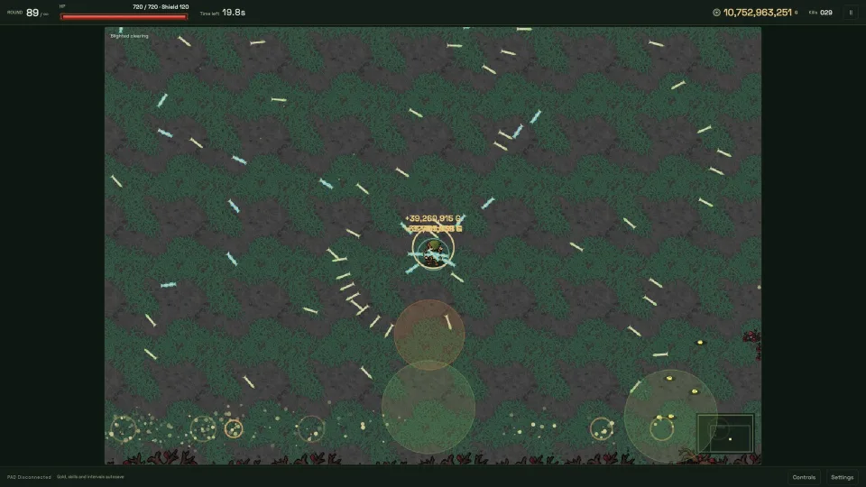
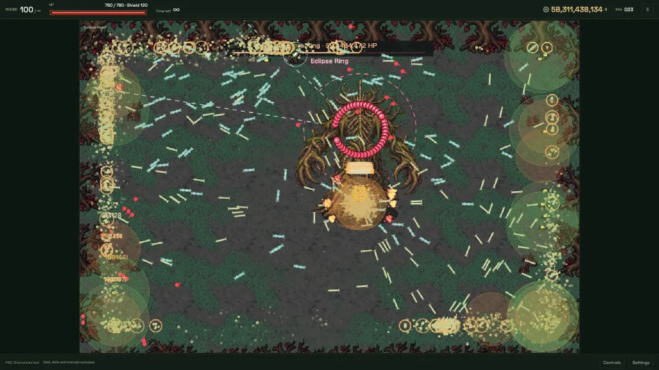
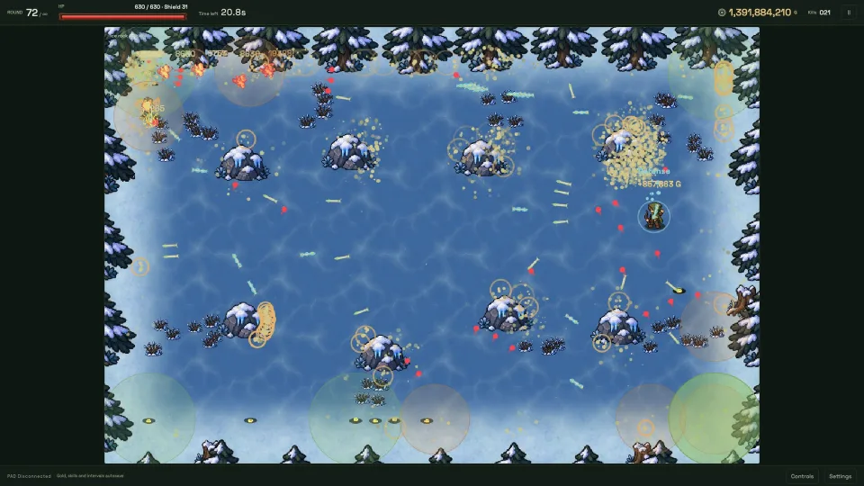
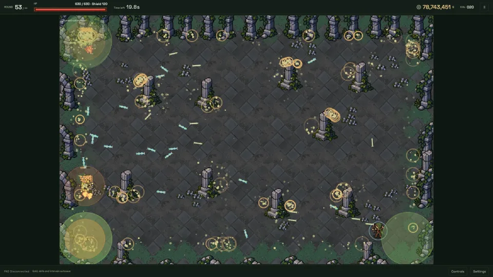
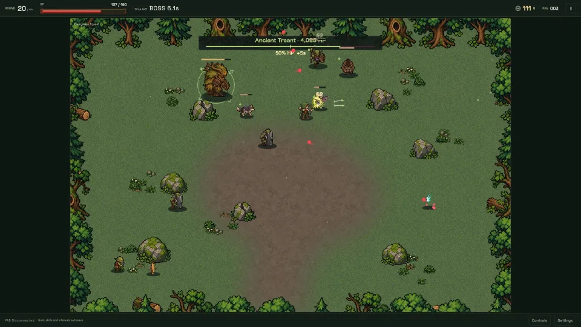
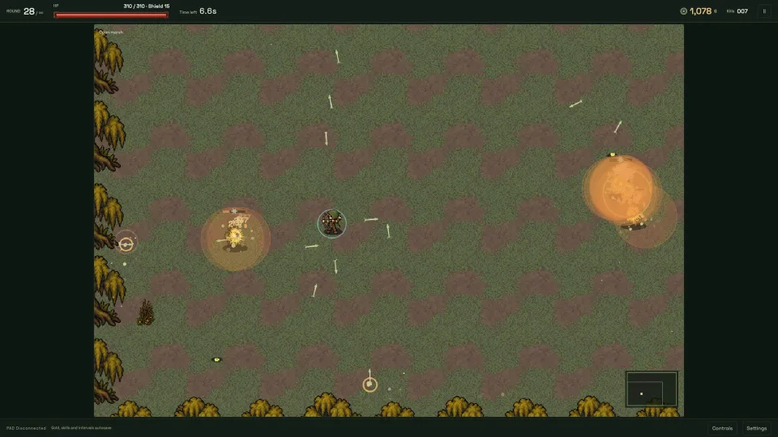
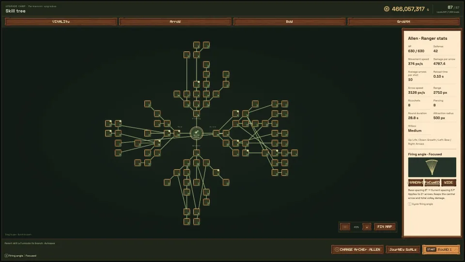
ロゴ・キーアート
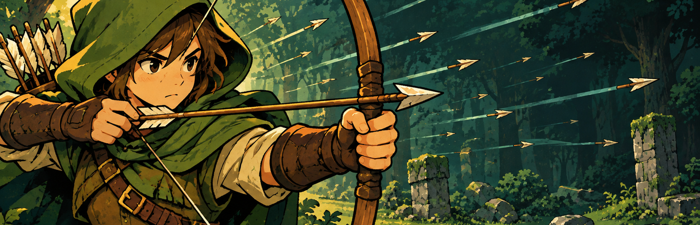
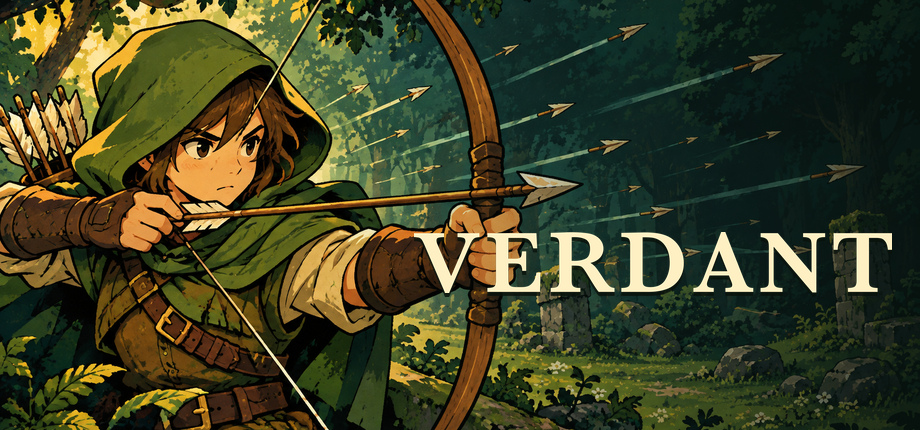
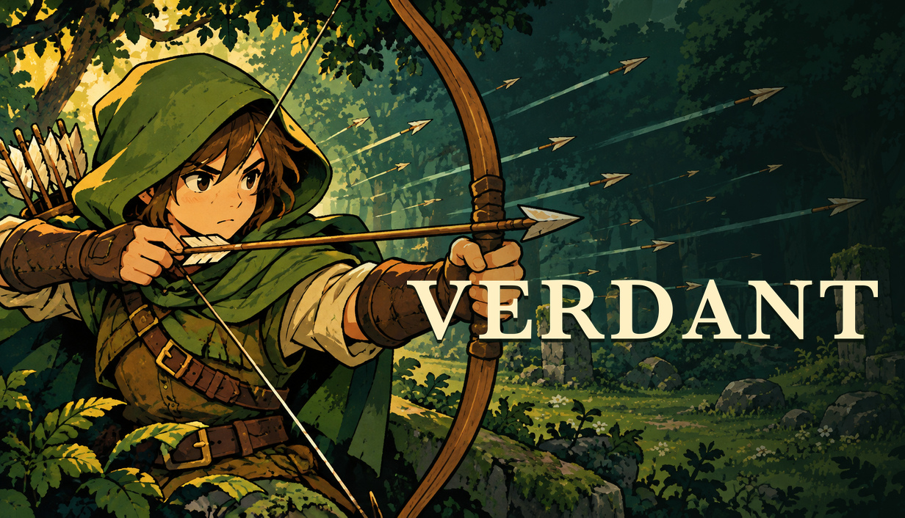
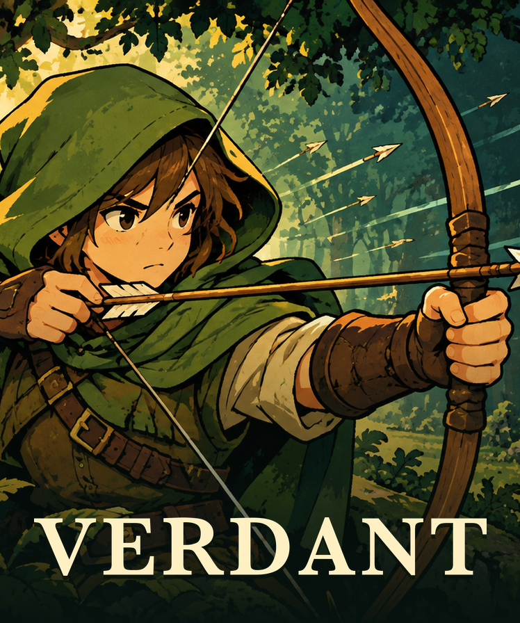
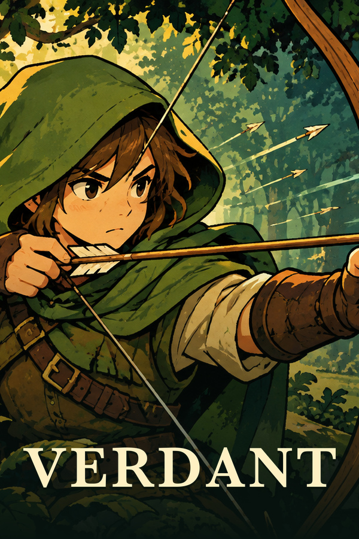
開発者
RustyWorks は日本の個人開発者です。
素材は記事・動画での紹介に自由にお使いください。製品版の Steam キーが必要な方は、メールでご連絡ください。